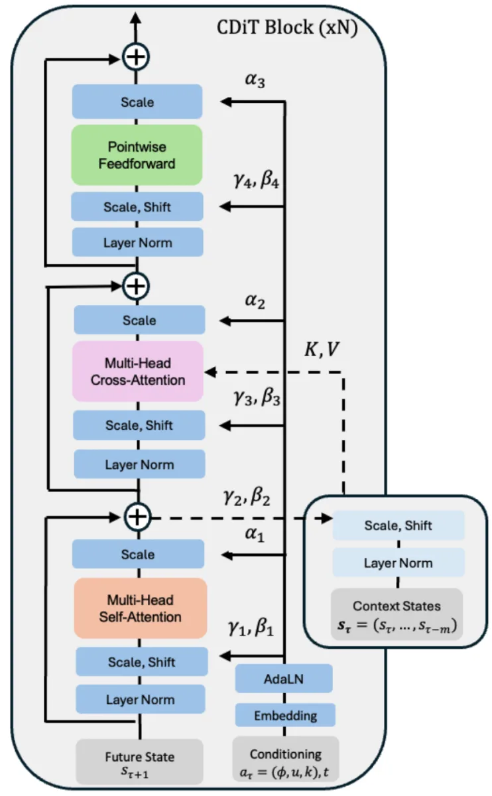
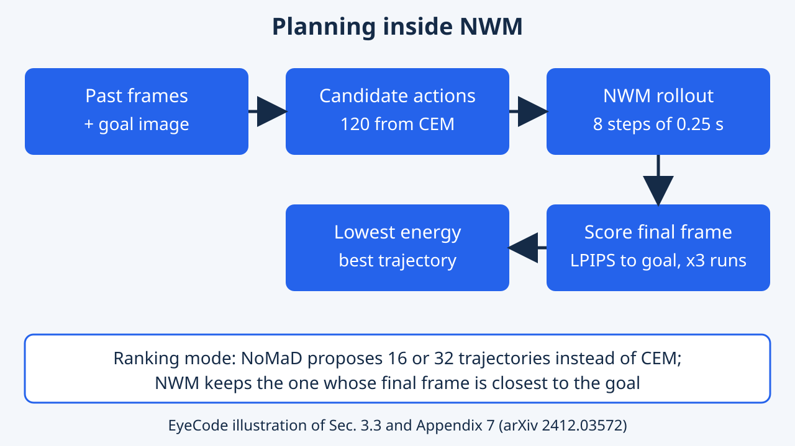
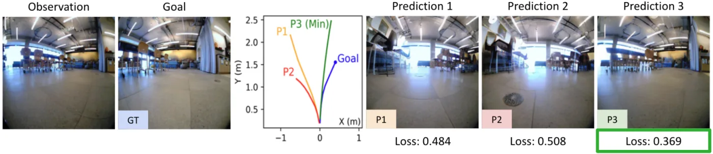
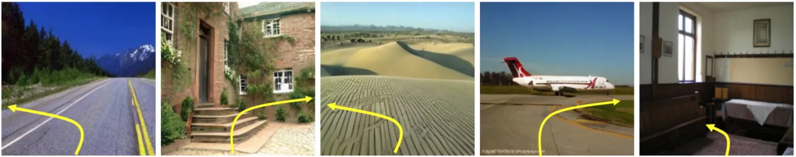
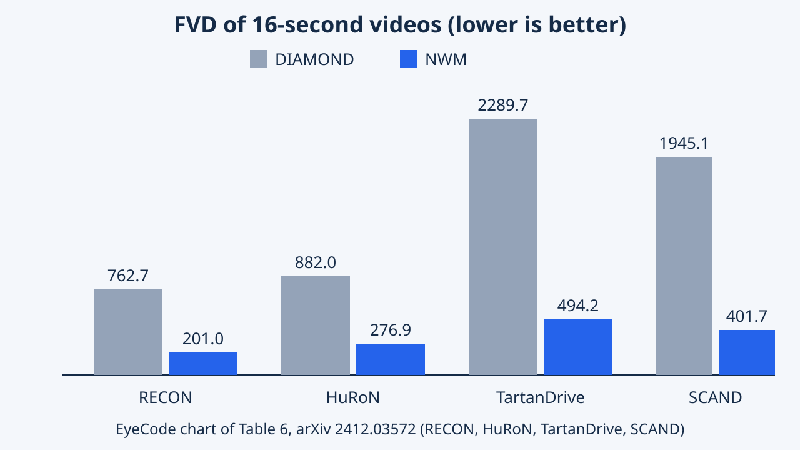

Navigation World Models
NWM dự đoán quan sát thị giác tương lai từ lịch sử và hành động điều hướng. Conditional Diffusion Transformer được dùng để mô phỏng, đánh giá quỹ đạo và đưa thêm ràng buộc vào lập kế hoạch thay vì cố định một chính sách hành động.
Navigation World Models huấn luyện một bộ mô phỏng video có điều khiển trên dữ liệu robot điều hướng rồi dùng nó để lập kế hoạch lúc suy luận. Bài đạt Best Paper Honorable Mention tại CVPR 2025 (theo trang giải thưởng chính thức); phân tích dưới đây được đối chiếu với văn bản và các bảng của bài báo.
Tổng quan
Hãy hình dung một robot biết mơ mộng. Trước khi di chuyển, nó hình dung mình sẽ thấy gì sau khi rẽ trái hoặc đi thẳng, rồi chọn lộ trình có cảnh tưởng tượng giống nơi cần đến nhất. Navigation World Models (NWM) là mô hình sinh video trao cho tác tử điều hướng đúng khả năng đó. Nó cũng cho phép tác tử tuân theo luật mới như 'đi thẳng trước' mà không cần dạy lại.
Navigation World Models (NWM) là mô hình dự đoán video có điều khiển cho điều hướng góc nhìn thứ nhất. Từ vài khung hình camera trước đó, một lệnh di chuyển (đi bao xa, quay bao nhiêu) và một độ lệch thời gian, nó sinh ra khung hình kế tiếp. Nối các dự đoán lại ta có video của một chuyến đi tưởng tượng.
Các tác giả dùng bộ mô phỏng đã học này để lập kế hoạch. Họ tưởng tượng nhiều quỹ đạo ứng viên, so khung hình cuối của mỗi quỹ đạo với ảnh đích và giữ quỹ đạo tốt nhất. Mô hình cũng có thể xếp hạng lại đề xuất của policy NoMaD có sẵn.
Đóng góp chính: CDiT, chi phí tăng tuyến tính theo số khung ngữ cảnh; huấn luyện trên nhiều dataset robot cộng video Ego4D không nhãn; lập kế hoạch có hoặc không có ràng buộc. Bài đạt Best Paper Honorable Mention tại CVPR 2025 theo trang giải thưởng chính thức.
NWM là một conditional diffusion transformer (CDiT-XL, khoảng 1B tham số ở cấu hình mặc định) được huấn luyện như world model điều kiện theo hành động trên video robot góc nhìn thứ nhất. Luận điểm trung tâm: một bộ dự đoán video tốt không chỉ để trực quan hóa; lúc kiểm thử nó là công cụ tìm kiếm có thể thay thế hoặc xếp hạng lại một policy feed-forward có điều kiện theo đích.
Bài đánh giá ba vai trò: dự đoán khung hình tới 16 giây, lập kế hoạch từ đầu bằng bộ tối ưu dựa trên lấy mẫu, và xếp hạng các quỹ đạo do NoMaD đề xuất. Bài cũng khảo sát ảnh hưởng của video Ego4D không nhãn lên môi trường chưa thấy và cách áp ràng buộc lúc lập kế hoạch. Các tác giả mô tả NWM gần về khái niệm với các diffusion world model cho học tăng cường ngoại tuyến (DIAMOND, GameNGen) nhưng được huấn luyện trên nhiều môi trường và thân máy. Ghi nhận: Best Paper Honorable Mention tại CVPR 2025; phần diễn giải bên dưới là của EyeCode.
Bài toán nghiên cứu
Phần lớn phần mềm điều hướng học một phản xạ cố định: nhìn ảnh camera và đích, rồi xuất nước đi tiếp theo. Nó không cân nhắc phương án khác và cũng khó nhận luật mới. Câu hỏi ở đây là tác tử có thể học cách góc nhìn thay đổi khi nó di chuyển, rồi dùng hiểu biết đó để suy tính trước hay không.
Hệ thống điều hướng thị giác thường học một policy, tức mạng ánh xạ trực tiếp quan sát hiện tại và ảnh đích thành hành động. Các tác giả nêu hai hạn chế: policy sau huấn luyện bị 'hard-code' nên khó thêm ràng buộc, và không phân bổ thêm tính toán cho bài toán khó.
Câu hỏi đặt ra: tác tử có thể học world model mô tả góc nhìn thay đổi thế nào theo chuyển động của chính nó, rồi lập kế hoạch bên trong mô hình lúc kiểm thử không? Mô hình nhận các latent trước đó và một hành động (tịnh tiến, yaw, time shift), xuất latent kế tiếp; nó phải chạy trên nhiều robot, hữu ích ở tầm xa và đủ nhanh để thử nhiều kế hoạch.
Bối cảnh là điều hướng thị giác có điều kiện theo đích từ RGB góc nhìn thứ nhất: cho các khung ngữ cảnh và ảnh đích, tìm chuỗi hành động (tịnh tiến phẳng và yaw) tới đích. Các policy như GNM và NoMaD giải bằng hồi quy trực tiếp hoặc diffusion policy huấn luyện bằng behaviour cloning. Bài phát biểu bài toán thành ánh xạ ngẫu nhiên từ các latent trước đó và một hành động sang latent kế tiếp, với bộ mã hóa là VAE đã huấn luyện sẵn, nên dự đoán giải mã ngược về pixel được.
Thách thức: các diffusion world model sẵn có (DIAMOND, GameNGen) nhắm vào một trò chơi; ở đây một mô hình phải phủ nhiều nền tảng với camera khác nhau, sai số cộng dồn qua rollout dài, hành động và thời gian có thể bị rối trong dữ liệu, và kế hoạch phải được đánh giá rẻ. Các tác giả còn muốn khái quát hóa tới GO Stanford (không nằm trong huấn luyện) và học được từ video không có nhãn hành động.
Ý tưởng chính
Hãy nghĩ tới cờ vua: thay vì một nước đi bản năng, bạn thử vài nước trong đầu và xem mỗi nước diễn ra thế nào. Mô hình sinh một đoạn video ngắn cho mỗi lộ trình có thể, lộ trình nào có ảnh cuối gần ảnh đích nhất sẽ thắng. Ví dụ để tới cánh cửa, nó tưởng tượng ba đường và giữ đường kết thúc với cảnh đối diện cửa.
Ý tưởng chính là coi lập kế hoạch điều hướng như tìm kiếm trên các video tưởng tượng. Một conditional diffusion transformer dự đoán khung kế tiếp từ các khung trước và một hành động. Vì là mô hình sinh, ta có thể lấy mẫu nhiều chuỗi hành động, mô phỏng từng chuỗi và chấm xem khung cuối gần ảnh đích đến đâu.
Ba thành phần: CDiT (self-attention chỉ trên khung đang sinh, cross-attention tới khung quá khứ); time shift (hành động cho biết dự đoán trước bao nhiêu giây, nên học được từ video không nhãn); và ràng buộc như 'đi thẳng trước' áp bằng cách giới hạn hành động ứng viên, không huấn luyện lại. Khác với policy như NoMaD xuất hành động trực tiếp, NWM so sánh phương án trước khi hành động.
Ba lựa chọn thiết kế gánh bài báo. Thứ nhất, khối CDiT tách việc khử nhiễu khung đích (self-attention trên chính các token của nó) khỏi việc điều kiện theo lịch sử (một lớp cross-attention tới token của khung quá khứ kèm skip connection). Bài nêu chi phí attention là $O(m^2 n^2 d)$ với DiT đưa mọi khung vào (m khung, n token mỗi khung, độ rộng d) so với $O(m n^2 d)$ của cross-attention trong CDiT.
Thứ hai, hành động là a = (u, phi, k): tịnh tiến phẳng, yaw và time shift k trong khoảng cộng trừ 16 giây. Hành động giữa hai khung được gộp bằng cách cộng các tịnh tiến và yaw (Eq. 2). Lấy mẫu nhiều goal cho mỗi trạng thái nhằm tạo các phản thực tự nhiên để mô hình không chỉ dựa vào thời gian. Thứ ba, lập kế hoạch là cực tiểu hóa năng lượng: độ tương đồng cảm nhận âm với đích cộng các phạt chỉ thị cho hành động không hợp lệ hoặc trạng thái không an toàn, tối ưu bằng Cross-Entropy Method trong khung Model Predictive Control.
Phương pháp


Mỗi khung hình camera được nén thành một mã gọn. Mô hình lặp lại việc khử nhiễu để tạo mã kế tiếp, dựa vào các khung trước và chuyển động đã chọn. Để lập kế hoạch, nó thử khoảng một trăm đường đi đơn giản, tưởng tượng kết quả từng đường và giữ đường trông gần đích nhất.
Mỗi khung được nén bằng VAE của Stable Diffusion thành các token latent. Một hành động gồm tịnh tiến 2D, góc yaw và time shift; các embedding của hành động, time shift và bước khuếch tán được cộng lại rồi đưa vào qua adaptive layer normalization. Trong CDiT, self-attention chỉ bao khung đang khử nhiễu, cross-attention đọc token các khung quá khứ. Mất mát là sai số bình phương khử nhiễu cộng một số hạng cận dưới biến phân cho hiệp phương sai, theo DiT. Mô hình mặc định có khoảng 1B tham số và bốn khung ngữ cảnh.
Lập kế hoạch dùng Model Predictive Control với Cross-Entropy Method (CEM): lấy mẫu 120 quỹ đạo ứng viên tám bước (mỗi bước 0.25 giây, tức 2 giây), mô phỏng mỗi quỹ đạo ba lần và chấm khung cuối với ảnh đích bằng LPIPS. Ở chế độ xếp hạng, NoMaD đề xuất 16 hoặc 32 quỹ đạo và NWM giữ quỹ đạo gần đích nhất. Ràng buộc áp bằng cách đặt về 0 một phần chuỗi hành động.
Mô hình và huấn luyện
Đầu vào là latent VAE của các khung ngữ cảnh và latent đích nhiễu. Trong mỗi khối, token đích attend vào chính chúng rồi cross-attend tới key và value của khung quá khứ. Các đại lượng vô hướng (tịnh tiến, yaw, time shift và bước khuếch tán) qua đặc trưng sin-cos và MLP hai lớp, được nối thành một vector, cộng thành một vector điều kiện duy nhất và đưa vào AdaLN để sinh scale và shift cho các layer norm và đầu ra attention. Với dữ liệu không nhãn, hành động tường minh đơn giản bị bỏ khỏi tổng này. Lịch nhiễu và siêu tham số theo DiT. CDiT-XL mặc định dùng batch 1024 với bốn goal mỗi trạng thái (tổng 4096), AdamW 8e-5, 8 máy H100 mỗi máy 8 GPU; số liệu báo cáo là trung bình của năm lần lấy mẫu. Goal được chọn trong cửa sổ cộng trừ 16 giây.
Lập kế hoạch
Lập kế hoạch độc lập giả định quỹ đạo là đường thẳng và chỉ tối ưu điểm cuối (độ lệch tiến, độ lệch ngang, yaw), triển khai thành tám bước delta đều nhau với yaw áp ở bước cuối. CEM chạy một vòng lặp với 120 mẫu; mỗi mẫu được đánh giá ba lần vì NWM là mô hình ngẫu nhiên. Trung bình khởi tạo bằng 0 trừ thành phần tiến, có trung bình và phương sai đặt theo từng dataset (ví dụ -0.1 và 0.02 trên RECON). Ở chế độ xếp hạng, NoMaD được điều kiện theo các khung trước và đích, lấy mẫu 16 hoặc 32 quỹ đạo độ dài 8, rồi chọn dự đoán cuối có LPIPS thấp nhất. Chuyển động lùi bị lọc khỏi dữ liệu theo NoMaD. Ví dụ ràng buộc: forward-first tiến 5 bước rồi quay 3 bước; left-right-first quay 3 bước trước khi tiến.
Thực nghiệm & kết quả
| Phương pháp | RECON ATE | RECON RPE | HuRoN ATE | TartanDrive ATE | SCAND ATE |
|---|---|---|---|---|---|
| Forward (luôn đi thẳng) | 1.92 | 0.54 | 4.14 | 5.75 | 2.97 |
| GNM | 1.87 | 0.73 | 3.71 | 6.65 | 2.12 |
| NoMaD | 1.95 | 0.53 | 3.73 | 6.32 | 2.24 |
| NWM + NoMaD (x16) | 1.88 | 0.51 | 3.73 | 6.26 | 2.18 |
| NWM + NoMaD (x32) | 1.79 | 0.49 | 3.68 | 6.25 | 2.19 |
| NWM một mình (lập kế hoạch) | 1.13 | 0.35 | 4.12 | 5.63 | 1.28 |
| Phương pháp | RECON | HuRoN | TartanDrive | SCAND |
|---|---|---|---|---|
| DIAMOND | 762.734 | 881.981 | 2289.687 | 1945.085 |
| NWM (của bài) | 200.969 | 276.932 | 494.247 | 401.699 |
| Thiết lập | LPIPS | DreamSim | PSNR |
|---|---|---|---|
| 1 goal mỗi mẫu | 0.312 | 0.098 | 15.044 |
| 2 goal | 0.305 | 0.096 | 15.154 |
| 4 goal | 0.296 | 0.091 | 15.331 |
| 1 khung ngữ cảnh | 0.304 | 0.097 | 15.223 |
| 2 khung ngữ cảnh | 0.302 | 0.095 | 15.274 |
| 4 khung ngữ cảnh | 0.296 | 0.091 | 15.331 |
| chỉ time | 0.760 | 0.783 | 7.839 |
| chỉ action | 0.318 | 0.100 | 14.858 |
| action + time | 0.295 | 0.091 | 15.343 |



Trên bốn dataset robot, mô hình sinh video dài chân thực hơn một world model trước đó. Khi tự lập kế hoạch trên một benchmark, nó tới gần đích hơn hai policy điều hướng phổ biến, nhưng ở benchmark khác thì không thắng. Video đi bộ bổ sung từ internet giúp ở nơi hoàn toàn mới và hơi làm kém đi ở vài nơi quen thuộc.
Dữ liệu: SCAND, TartanDrive, RECON, HuRoN (có hành động), Ego4D không nhãn để huấn luyện, GO Stanford cho môi trường chưa thấy. Thước đo: ATE, RPE cho quỹ đạo; LPIPS, DreamSim, PSNR cho dự đoán khung; FID, FVD cho chất lượng sinh. Baseline: DIAMOND (world model UNet), GNM và NoMaD (policy).
Với video 16 giây ở 4 FPS, NWM có FVD thấp hơn hẳn DIAMOND trên mọi dataset, ví dụ 200.969 so với 762.734 trên RECON (bảng thứ hai bên dưới). Khi lập kế hoạch, NWM độc lập đạt ATE 1.13 và RPE 0.35 trên RECON, so với 1.87 và 0.73 của GNM và 1.95 và 0.53 của NoMaD (bảng thứ nhất, càng thấp càng tốt). Nó cũng dẫn trên SCAND và sát sao trên TartanDrive, nhưng không phải trên HuRoN, nơi NWM + NoMaD (x32) tốt nhất với 3.68. Ablation trên RECON (bảng thứ ba): nhiều goal, nhiều khung ngữ cảnh và action cộng time đều có ích; chỉ time thì thất bại. Thêm Ego4D cải thiện nhẹ GO Stanford (LPIPS 0.658 xuống 0.652) nhưng làm RECON kém đi (0.295 lên 0.368). Bài cũng có rollout định tính và một ca thất bại.
Quy trình. Lập kế hoạch được chấm trên 100 ví dụ mỗi dataset mà heuristic luôn-đi-thẳng dự đoán tệ nhất, nên tập đánh giá cố ý khó; dòng Forward trong bảng thứ nhất chính là heuristic này, và trên TartanDrive, vốn bị chi phối bởi chuyển động tiến, bài lưu ý kết quả sát với baseline này. Tập dự đoán theo thời gian dùng 500 ví dụ ngẫu nhiên. Số ablation là dự đoán một bước trước 4 giây trên RECON. Các bảng gốc in trung bình kèm độ lệch chuẩn trên năm lần lấy mẫu; EyeCode chỉ hiển thị trung bình.
Ablation (bảng thứ ba). Từ một lên bốn goal làm LPIPS giảm 0.312 xuống 0.296, và từ một lên bốn khung ngữ cảnh giảm 0.304 xuống 0.296; chênh lệch tuyệt đối nhỏ nhưng vượt độ lệch chuẩn được in. Điều kiện chỉ time sụp đổ (0.760), chỉ action là 0.318 và action cộng time là 0.295, ủng hộ nhận định rằng cả hai tín hiệu đều giúp. CDiT so với DiT (Figure 5, vẽ LPIPS theo TFLOPs; chúng tôi không đọc được giá trị chính xác từ văn bản): bài nói CDiT tiếp tục cải thiện tới 1B tham số với dưới 2x FLOPs và CDiT-L nhanh gấp 4 lần DiT-XL mà tốt hơn; phần giới thiệu nêu ít hơn 4x FLOPs. Đó là các phép so sánh khác nhau, chưa chắc mâu thuẫn.
Chất lượng video. Figure 4 so NWM với DIAMOND ở 1 và 4 FPS trong 16 giây: biến thể 1 FPS ban đầu tốt hơn, nhưng sau khoảng 8 giây sai số tích lũy và biến thể 4 FPS tốt hơn. Ràng buộc (Table 3): so với lập kế hoạch không ràng buộc, chênh lệch vị trí cuối và yaw là +0.36/+0.61 với forward-first, -0.03/+0.20 với left-right-first và +0.08/+0.22 với straight-then-forward; các tác giả coi là suy giảm nhỏ. Dữ liệu chưa thấy (Tables 4, 5, 9): trên GO Stanford LPIPS từ 0.658 xuống 0.652 khi có Ego4D, DreamSim từ 0.478 xuống 0.464, và test-time adaptation (2k bước tinh chỉnh) đạt 0.650. Trên các dataset đã biết, Ego4D làm HuRoN kém đi (0.250 lên 0.377) và TartanDrive (0.414 lên 0.430), chỉ giúp SCAND (0.403 xuống 0.398). Thời gian chạy (Table 8, một RTX 6000 Ada, 32 quỹ đạo bốn giây): 30.3 s, 14.7 s với time skip (8 trạng thái thay vì 16), 0.4 s sau khi chưng cất số bước khử nhiễu từ 250 xuống 6; con số 4-bit (0.1 s) là ước tính, không phải đo đạc.
Hạn chế
Qua các rollout tưởng tượng dài ở nơi lạ, mô hình dần quên mình đang ở đâu và trôi về những cảnh đã thấy khi huấn luyện. Nó cũng khó với vật thể chuyển động như người đi bộ, chỉ hiểu chuyển động phẳng 2D, và việc lập kế hoạch chậm nếu không có mẹo tăng tốc.
Do tác giả nêu
Bài có một mục hạn chế ngắn. Ngoài phân phối, mô hình dần mất ngữ cảnh và sinh khung giống dữ liệu huấn luyện (mode collapse). Nó gặp khó với động lực như chuyển động người đi bộ, dù không phải lúc nào cũng vậy. Các tác giả kỳ vọng ngữ cảnh dài hơn và nhiều dữ liệu hơn sẽ giảm cả hai vấn đề. Hành động chỉ 3 bậc tự do; 6 DoF để lại cho tương lai. Tốc độ suy luận là điểm nghẽn cho robot thật, và phần thảo luận thừa nhận chưa rõ biểu diễn nào giúp NWM hoạt động vì không có bản đồ tường minh.
Phân tích của EyeCode (diễn giải biên tập)
Kết quả hỗn hợp: lập kế hoạch độc lập thua xếp hạng đề xuất NoMaD trên HuRoN, và Ego4D đánh đổi độ chính xác trong miền lấy môi trường chưa thấy. Đánh giá dùng dataset ghi sẵn và 100 ví dụ khó; trong văn bản đã đọc chúng tôi không thấy triển khai robot thật. Các bảng của bài lệch nhẹ nhau (xem chú thích bảng thứ nhất).
Do tác giả nêu
Mục 5 liệt kê mode collapse trên dữ liệu ngoài phân phối (Figure 10), mô phỏng yếu các tác tử chuyển động độc lập như người đi bộ, và hành động chỉ 3 DoF. Phụ lục nêu triển khai bị nghẽn bởi tốc độ suy luận, và đưa ra time skip, chưng cất (250 xuống 6 bước khử nhiễu, giảm nhẹ chất lượng hình ảnh) và một ước tính lượng tử hóa 4-bit chưa thử. Phần thảo luận cho biết chưa rõ biểu diễn nào cho phép điều hướng, và phỏng đoán rằng dự đoán khung kế tiếp từ góc nhìn thứ nhất có thể dẫn tới biểu diễn allocentric; điều này chưa được kiểm chứng.
Phân tích của EyeCode (diễn giải biên tập)
Bộ lập kế hoạch khá đơn giản: điểm cuối của đường thẳng, một vòng CEM và tầm hai giây, nên không thể kết luận về lập kế hoạch tầm dài. Độ tương đồng LPIPS với đích là xấp xỉ, chưa chắc phản ánh khả năng tới được. Chênh lệch ablation nhỏ về LPIPS tuyệt đối, và hiệu ứng Ego4D đổi dấu giữa các dataset, nên cần báo cáo theo từng dataset. Hai giá trị ATE của NoMaD trên RECON (1.93 ở Table 2, 1.95 ở Table 7), cùng các chênh nhỏ tương tự ở các dòng NWM + NoMaD, cho thấy bài chưa hoàn toàn nhất quán nội bộ; cách diễn đạt về FLOPs (ít hơn 4x ở phần giới thiệu, dưới 2x ở mục 4.2, nhanh gấp 4 lần cho CDiT-L so với DiT-XL) cũng cần thận trọng khi trích dẫn.
Điểm cần nhớ
Một mô hình tưởng tượng được kết quả các bước đi cho phép robot thử trong đầu để lập kế hoạch, tuân theo luật mới, và học từ video không có nhãn chuyển động.
- Mô hình video điều kiện theo hành động có thể làm bộ lập kế hoạch điều hướng, không chỉ để trực quan hóa.
- CDiT điều kiện theo khung quá khứ bằng cross-attention nên chi phí tăng tuyến tính theo độ dài ngữ cảnh.
- Đầu vào time shift cho phép video không nhãn tham gia huấn luyện.
- NWM độc lập thắng GNM và NoMaD ở ATE trên RECON và SCAND, nhưng không thắng trên HuRoN.
Hướng gợi ý (đề xuất của EyeCode, không phải kết luận của bài báo)
- Thử các bộ lập kế hoạch phong phú hơn CEM một vòng với đường thẳng.
- Báo cáo việc trộn Ego4D theo từng dataset để biết khi nào dữ liệu không nhãn có ích.
- Tìm kiếm lúc kiểm thử trên bộ mô phỏng đã học là phương án khả thi thay cho policy trực tiếp, với ràng buộc biểu diễn bằng giới hạn hành động thay vì huấn luyện lại.
- Chi phí tuyến tính theo độ dài ngữ cảnh khiến việc mở rộng phần điều kiện tới khoảng 1B tham số trở nên thực tế.
- Dữ liệu trộn miền là một đánh đổi: nó giúp GO Stanford và SCAND nhưng làm kém RECON, HuRoN và TartanDrive (Tables 4 và 5).
- Tập đánh giá rất quan trọng: kết quả trên 100 ví dụ khó nhất đối với heuristic đi thẳng có thể không áp dụng cho quỹ đạo thông thường.
Hướng gợi ý (đề xuất của EyeCode, không phải kết luận của bài báo)
- Thay điểm LPIPS với đích bằng thước đo khả năng tới được hoặc khoảng cách đã học và so sánh thứ hạng.
- Chạy bộ lập kế hoạch với nhiều vòng CEM và tầm dài hơn để xem sai số mô phỏng bắt đầu chi phối từ đâu.
- Đo mức trôi của rollout ngoài phân phối theo độ dài ngữ cảnh để kiểm tra giả thuyết ngữ cảnh dài của các tác giả.